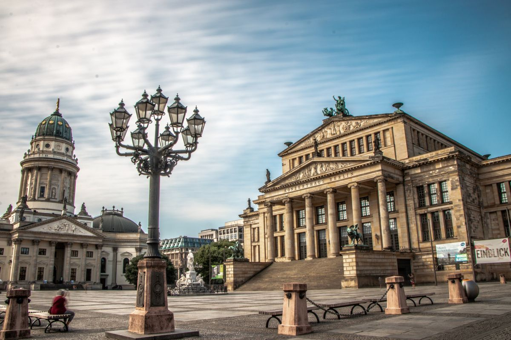
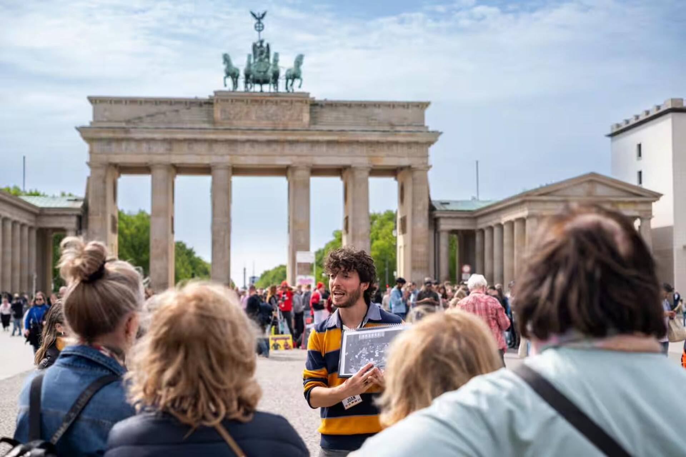
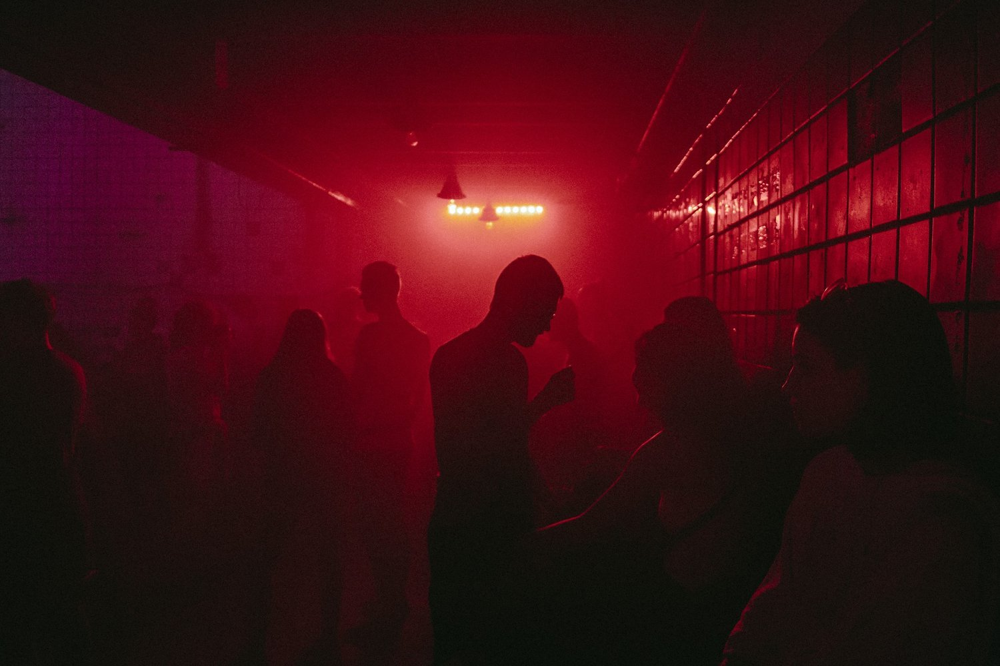

Berlin Wall History: Construction, Life and Fall
28 years divided a city, a nation and a continent. Everything you need to know before walking the Wall's remnants.

Berlin in 3 Days: Complete Itinerary
The ultimate guide to making the most of three days in the German capital, with must-sees and local insider secrets.

Private Tours in Berlin: Seeing vs. Understanding
No crowds of 30, no closed umbrellas, no little flags. Discover why a private tour transforms your Berlin visit.

Berlin in 1 Day: Mission (Almost) Impossible
Only one day in Berlin? The most efficient express route, with humour and zero museums. For those short on time but big on ambition.

Berlin Free Tours: Complete Guide
What is a free tour, how they work, what they cover and how to choose the best one. Everything about free tours in Berlin.

Sachsenhausen Concentration Camp: How to Get There
Practical guide to visiting Sachsenhausen: transport, opening hours, what to see and how to prepare yourself emotionally.
Berlin on a Budget: Complete Guide
How to enjoy Berlin without overspending: cheap accommodation, local food, transport and everything free the city has to offer.

Berlin Street Art: From the Wall to Kreuzberg
East Side Gallery, Kreuzberg, Neukölln and beyond: the best neighbourhoods and spots to discover Berlin's world-class street art scene.

Berlin Techno: The Definitive Guide
Berghain, Tresor, Watergate and more: the history of Berlin techno, the best clubs and tips for getting past (or not) the door.

What to Eat in Berlin: Döner, Currywurst and More
Berlin's food guide: from Mustafa's döner to Markthalle Neun, via the city's Vietnamese and Arab cuisine scenes.

Berlin Beer Culture: Biergärten, Kneipen and Craft Beer
Open-air beer gardens, neighbourhood Kneipen and the craft scene: everything you need to know to drink well in Berlin.